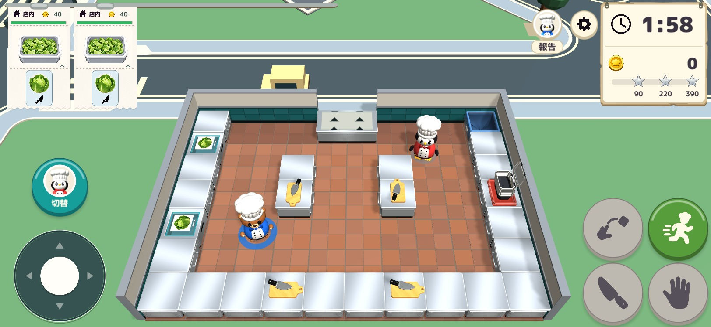
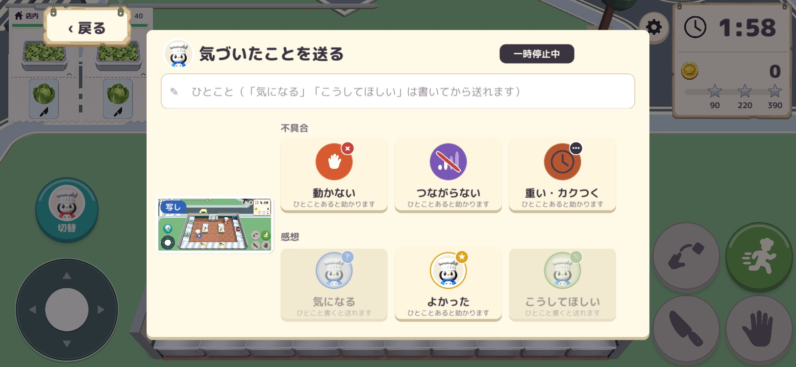

料理をつくって、運んで、お店を育てるアクションゲーム。ひとりでじっくり、協力プレイでは分担して営業できます。
テストで遊んでほしいこと
料理を作る・運ぶ操作や、ひとりで出張営業、協力プレイを試してください。
気づいたことを教えてください
不具合も、要望も、良かったところも、遊びやすくするヒントになります。運営が知っていそうな不具合でも、その場で画面の上の方にある「報告」ボタン（料理人の顔の丸いボタン）から送ってください。押した時の画面も届きます。
押す場所や次にすることに迷った、文字やボタンが見づらい、思った動きと違った、説明なしでは分からなかった。「慣れていないだけかも」と思ったことも、ぜひ教えてください。
参加前にお読みください
最初に（大事なお願い）
- 正式公開までは、ゲームの画面や内容をSNS・動画・配信などで公開しないでください。
- 招待リンクは他の人に渡さず、友だちには募集ページを案内してください。
- 進み具合・コイン・料理人・ランキングなど、テストのデータは正式公開前にすべて消えます。
はじめに
正式公開前のクックライドを、iPhone・iPadで先に遊ぶテストです。料理を作ってバイクで街へ届けるゲームで、ひとりでも、2〜4人の協力でも遊べます。テストは正式公開前までです。
遊んでほしいこと
最初の10分は、まず一度遊んでみてください。何も知らない状態でどこに迷うかを知りたいです。その後は好きなだけ遊んでください。協力プレイは友だちと好きな時に試せます。
特に知りたいこと
- どこを押せばいいか、迷った
- 何をすればいいか、すぐに分からなかった
- 文字やボタンが小さい・読みにくい
- 思っていた動きと違った
- 説明を読まないと分からなかった
「たぶん自分が慣れていないだけ」と思うことも、ぜひ送ってください。
「報告」ボタンの使い方
不具合、要望、良かったところを教えてください。運営が知っていそうな不具合でも、気づいたその場で、画面の上の方にある「報告」ボタン（料理人の顔の丸いボタン）を押すと、その時の画面も届きます。
「気づいたことを送る」の画面で項目を選んで送ります。「気になる」「こうしてほしい」は、先に「ひとこと」を書いてください。



データについて
遊んだ記録や、報告に含まれる写真・端末情報をゲームの改善に使い、正式公開前に消します。登録メールアドレスはβテストの連絡と正式公開の案内に使い、正式公開の知らせを送った後に消します。テスト中の購入に料金はかかりません。
困った時・問い合わせ
つながらない時や止まった時は、アプリを一度閉じて開き直してください。直らなければ「報告」ボタンから送ってください。報告ボタンが使えない時は、cookride@takutonkatsu.com にご連絡ください。
参加前にご確認ください
申し込みを受け付けました
TestFlight の招待を開く入れ方（3分ほど）
- App Store で「TestFlight」を入れます。
- この画面の「TestFlight の招待を開く」を押します。
- 「クックライド」をインストールします。
遊べるのは iPhone と iPad です。TestFlight から更新の知らせが来たら、更新をお願いします。
アプリを開いた時に「新しい版が出ています」と出たら、TestFlight のアプリを開き、「クックライド」の「アップデート」を押してください。札には「App Store で更新」と書いてありますが、βテストの間は TestFlight からの更新になります。更新しても、進み具合やコインはそのまま残ります。
気づいたことを教えてください
不具合、要望、良かったところをぜひ送ってください。運営が知っていそうな不具合も歓迎です。気づいたその場で、画面の上の方にある「報告」ボタン（料理人の顔の丸いボタン）を押すと、その時の画面も届きます。
押す場所やすることに迷った、文字やボタンが見づらい、思った動きと違った、説明なしでは分からなかった。「慣れていないだけかも」と思うことも、改善のヒントになります。